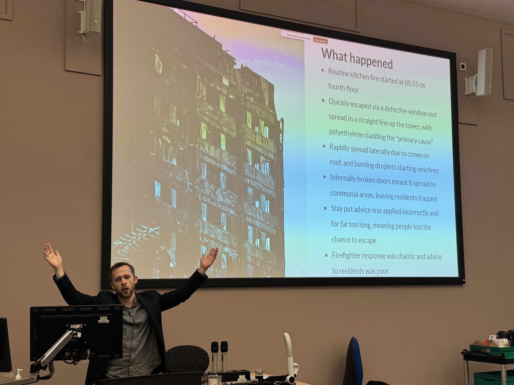

Beyond Building Safety to Healthy Homes

On 27 February 2025, the University of Leeds Healthy Buildings Network hosted an unforgettable seminar titled “Beyond Building Safety: Why Can't Healthy Homes be Grenfell’s Legacy?” featuring a moving and provocative talk delivered by award-winning journalist Pete Apps. The event brought together experts, advocates, and community members to explore the deep-rooted issues in our housing system that the Grenfell Tower tragedy so painfully exposed.
Pete Apps guided us through the events of that fateful night, explaining how a routine kitchen fire escalated into catastrophe due to cost-cutting measures, regulatory failures, and a lack of accountability. His detailed account, underpinned by inquiry evidence, revealed how aesthetic decisions—like over-cladding to enhance appearance—triggered a fatal chain reaction.
Challenging conventional notions of building safety, Pete urged us to rethink what a ‘healthy home’ truly means. He emphasised that while regulatory improvements have been made since Grenfell, fundamental issues such as resident empowerment and holistic wellbeing remain overlooked. His talk was not just a recounting of past failings but a passionate call to action for a future where housing policies prioritise human dignity over profit.
The seminar not only honoured the memory of those lost at Grenfell Tower but also sparked critical conversations on transforming our built environment. Ideas for further collaboration emerged—from joint research initiatives and public forums to community engagement projects—ensuring that the legacy of Grenfell inspires transformative action.
As we move forward, the Healthy Buildings Network is committed to promoting a holistic healthy homes agenda that prioritises safety, wellbeing, and dignity in every space. The lessons of Grenfell remind us that true progress in housing must integrate technical rigour with ethical responsibility.
We invite all stakeholders—researchers, industry professionals, and community advocates—to work together in building a future where every home supports physical, mental, and social wellbeing.

Director, Water, Public Health & Environmental Engineering Research Group, University of Leeds
Dr. King leads interdisciplinary research at the intersection of fluid dynamics, infection control, and public health. His work increasingly bridges engineering with arts & humanities to foster truly healthy built environments.